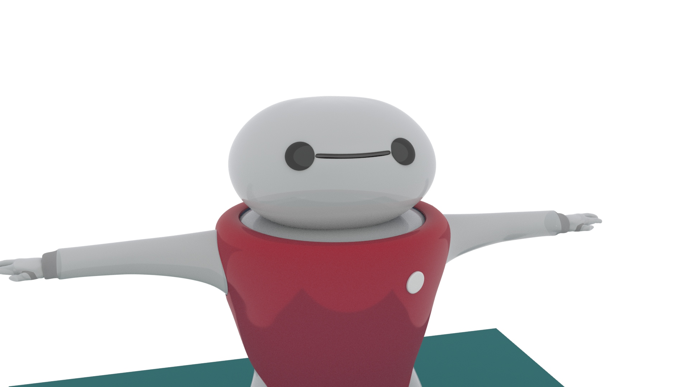
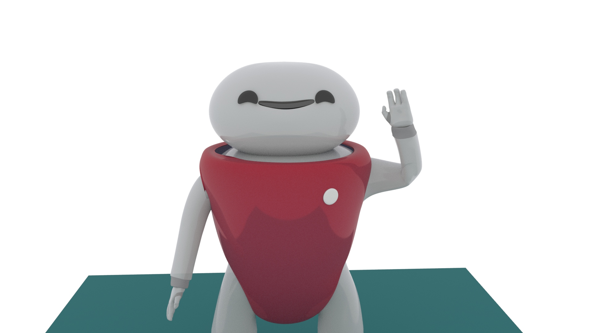
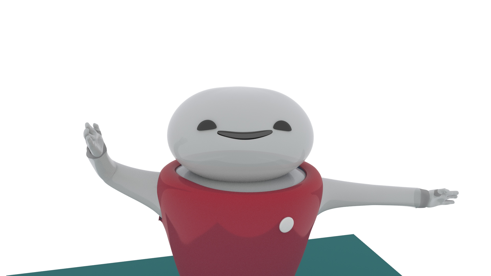
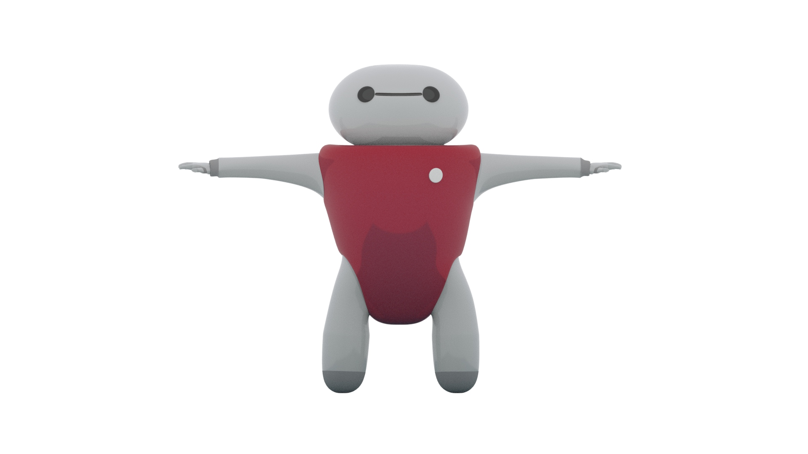
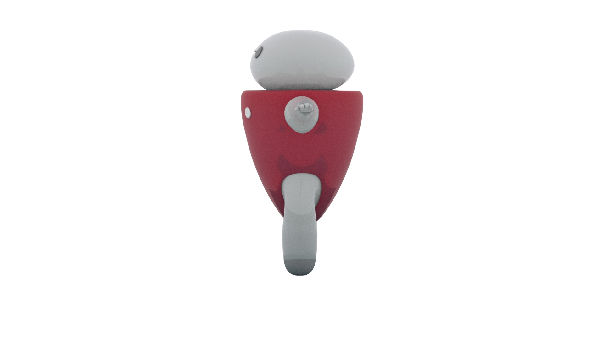

Meet Mari! Throughout his life, Mari has always been told that he is clumsier than most people. This is because he is made primarily of a balloon-like quality that makes him pretty round. To prove the haters wrong, he has been working hard on his agility and flexibility. He is particularly happy recently because he was able to do the splits! Mari's ultimate dream is to make it to the Olympics, competing in the uneven bars gymnastic event.
    